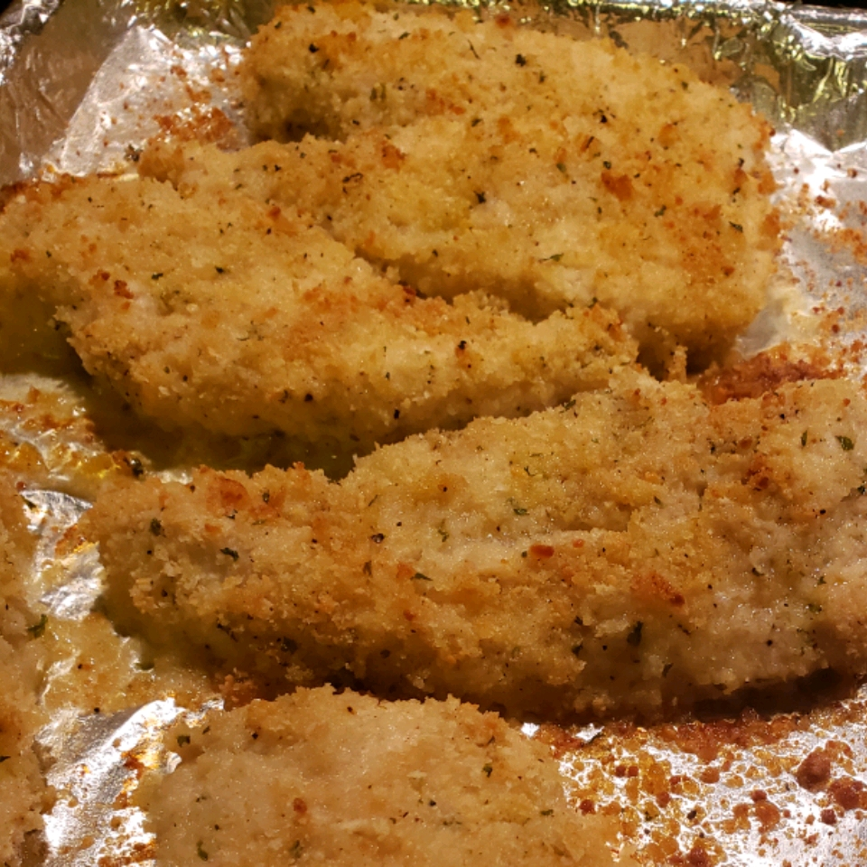

Quick Crispy Parmesan Chicken Breasts

Description
These are delicious, easy, quick, and so versatile! Eat them plain, topped with your favorite spaghetti sauce, or sliced on a Caesar salad.
Ingredients
- cooking spray
- ½ cup panko bread crumbs
- ⅓ cup Parmesan cheese
- ¼ teaspoon paprika
- ¼ teaspoon salt
- ¼ teaspoon ground black pepper
- 3 tablespoons melted butter
- 2 teaspoons white wine (Optional)
- 1 teaspoon Dijon mustard
- 1 clove garlic, crushed
- 4 skinless, boneless chicken breast halves, pounded to an even thickness
Steps
- Preheat oven to 400 degrees F (200 degrees C). Line a baking sheet with aluminum foil and spray with cooking spray.
- Whisk bread crumbs, Parmesan cheese, paprika, salt, and black pepper together in a shallow bowl. Stir butter, white wine, mustard, and garlic together in another bowl.
- Dip each chicken breast half into melted butter mixture; press into bread crumb mixture to evenly coat. Place breaded chicken in a single layer on the prepared baking sheet. Pat any leftover bread crumb mixture onto chicken breasts.
- Bake chicken in the preheated oven until no longer pink in the center and the juices run clear, about 20 minutes. An instant-read thermometer inserted into the center should read at least 165 degrees F (74 degrees C).
Return home